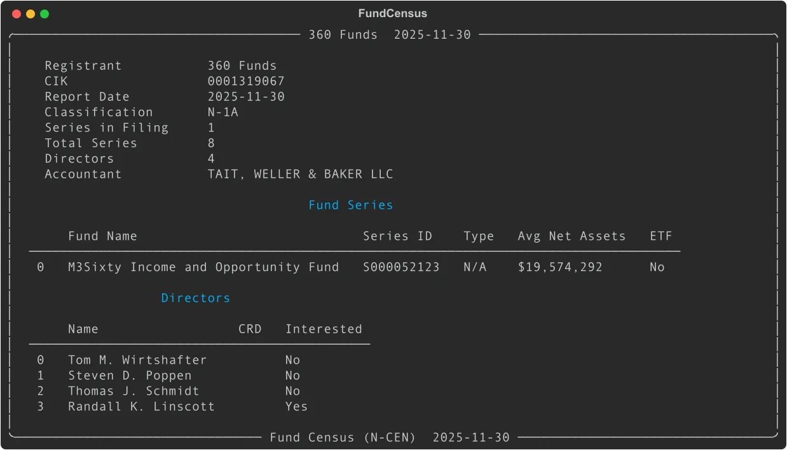

Fund Census (N-CEN): Parse Annual Fund Reports with Python
Every registered investment company files Form N-CEN annually -- a comprehensive census of fund operational data. EdgarTools parses these filings into structured Python objects, revealing fund series, service providers, board composition, ETF mechanics, broker relationships, and securities lending programs.
from edgar import get_filings
filings = get_filings(form="N-CEN")
census = filings[0].obj()
census

Three lines to get a fully parsed annual census with registrant info, fund series, directors, and all operational disclosures.
Access Series Data
The series_data() method returns a DataFrame with one row per fund series, showing assets, commission totals, and service provider counts:
census.series_data()
| Column | What it is |
|---|---|
name |
Fund series name |
series_id |
SEC series identifier (e.g., "S000052123") |
lei |
Legal Entity Identifier |
fund_type |
Fund classification |
avg_net_assets |
Average monthly net assets |
aggregate_commission |
Total broker commissions paid |
num_advisers |
Count of investment advisers |
num_custodians |
Count of custodians |
has_etf |
Whether series has ETF structure |
Average net assets and commission figures are in full dollars (not thousands). An avg_net_assets of 19,574,292 means exactly $19.6 million.
Access Service Provider Network
See who manages, custodies, administers, and services the funds:
census.service_providers()
Returns a DataFrame with all service providers flattened across fund series:
| Column | What it is |
|---|---|
series_name |
Fund series name |
series_id |
Series identifier |
role |
Provider role ("adviser", "custodian", "transfer agent", etc.) |
provider_name |
Provider firm name |
lei |
Legal Entity Identifier |
affiliated |
Whether provider is affiliated with the fund |
This includes advisers, custodians, transfer agents, administrators, pricing services, and shareholder servicing agents -- everyone touching the fund's operations.
Analyze Broker Relationships
N-CEN discloses broker-dealer and broker commission payments:
census.broker_data()
| Column | What it is |
|---|---|
series_name |
Fund series name |
series_id |
Series identifier |
type |
"broker-dealer" or "broker" |
broker_name |
Firm name |
lei |
Legal Entity Identifier |
commission |
Commission amount paid |
Commission values are in full dollars. Use this to analyze broker concentration and trading costs across the fund complex.
Examine Board Composition
Access the board of directors with interested-person flags:
census.director_data()
| Column | What it is |
|---|---|
name |
Director name |
crd_number |
CRD identifier (if registered) |
interested_person |
Whether director is an interested person under the '40 Act |
Directors marked as "interested persons" have material relationships with the fund or its adviser. Independent directors are not interested persons.
Access ETF-Specific Data
For funds with ETF structures, get creation/redemption mechanics and authorized participants:
census.etf_data()
Returns a DataFrame with ETF-specific metrics:
| Column | What it is |
|---|---|
series_name |
Fund series name |
series_id |
Series identifier |
exchange |
Primary exchange (e.g., "NYSE", "NASDAQ") |
ticker |
Trading symbol |
creation_unit_size |
Number of shares per creation unit |
avg_pct_purchased_in_kind |
Average percentage of creations settled in-kind |
avg_pct_redeemed_in_kind |
Average percentage of redemptions settled in-kind |
is_in_kind |
Whether fund permits in-kind transactions |
num_authorized_participants |
Count of authorized participants |
This DataFrame is empty for fund complexes without ETFs. Always check with df.empty before analysis.
Look Up a Specific Fund Complex
Search by management company CIK or name:
from edgar import Company
company = Company("VANGUARD")
filing = company.get_filings(form="N-CEN").latest(1)
census = filing.obj()
print(census.name) # Registrant name
print(f"{census.num_series} series") # Series count in this filing
print(census.report_date) # Report period end
A single N-CEN filing may cover multiple fund series, or just one series from a larger complex. Check census.total_series to see how many series the registrant has total.
Common Analysis Patterns
Service provider concentration
providers = census.service_providers()
# Count unique providers per role
providers.groupby('role')['provider_name'].nunique()
# Find affiliated providers
affiliated = providers[providers['affiliated'] == True]
Commission analysis
brokers = census.broker_data()
if not brokers.empty:
# Top brokers by commission
top_brokers = brokers.groupby('broker_name')['commission'].sum().sort_values(ascending=False)
print(top_brokers.head(10))
Board independence
directors = census.director_data()
total = len(directors)
interested = directors['interested_person'].sum()
independent = total - interested
print(f"Board composition: {independent} independent, {interested} interested")
ETF creation mechanics
etf = census.etf_data()
if not etf.empty:
for idx, row in etf.iterrows():
print(f"{row['ticker']}: {row['avg_pct_purchased_in_kind']:.1f}% in-kind purchases")
Access Individual Objects
The FundCensus class uses Pydantic models for structured access to all fund census data. These are useful when building custom applications or exporting to other formats.
Registrant Information
reg = census.registrant
print(reg.name) # Registrant name
print(reg.cik) # CIK
print(reg.classification_type) # Fund classification
print(reg.total_series) # Total series count
print(reg.accountant.name) # Public accountant
print(reg.cco_name) # Chief Compliance Officer
Fund Series
for series in census.series:
print(f"{series.name} ({series.series_id})")
print(f" Advisers: {len(series.advisers)}")
print(f" Custodians: {len(series.custodians)}")
print(f" Securities lending: {series.is_securities_lending}")
# ETF details
if series.etf_info:
etf = series.etf_info
print(f" ETF ticker: {etf.ticker}")
print(f" Exchange: {etf.exchange}")
print(f" Creation unit: {etf.creation_unit_size}")
Service Providers
series = census.series[0]
# Investment advisers
for adviser in series.advisers:
print(f"{adviser.name} - {adviser.role}")
print(f" Affiliated: {adviser.is_affiliated}")
# Custodians
for custodian in series.custodians:
print(f"{custodian.name}")
Broker Dealers
series = census.series[0]
for bd in series.broker_dealers:
print(f"{bd.name}")
print(f" Commission: ${bd.commission:,.2f}" if bd.commission else " No commission reported")
print(f" LEI: {bd.lei}")
Line of Credit
series = census.series[0]
if series.line_of_credit:
loc = series.line_of_credit
if loc.has_line_of_credit:
print(f"Line of credit: ${loc.size:,.0f}")
print(f"Committed: {loc.is_committed}")
print(f"Institutions: {', '.join(loc.institution_names)}")
Securities Lending
series = census.series[0]
for sl in series.securities_lending:
print(f"Agent: {sl.agent_name}")
print(f" Affiliated: {sl.is_affiliated}")
print(f" Indemnified: {sl.is_indemnified}")
Metadata Quick Reference
| Property | Returns | Example |
|---|---|---|
name |
Registrant name | "360 Funds" |
cik |
CIK identifier | "0001319067" |
report_date |
Report period end date | "2025-11-30" |
num_series |
Number of series in filing | 1 |
total_series |
Total series registered | 8 |
classification_type |
Fund classification | "N-1A" |
is_etf_company |
Has any ETF series | True or False |
registrant |
RegistrantInfo object | Full registrant details |
series |
List of FundSeriesInfo | All series with full details |
filing |
Source Filing object | Filing or None |
Methods Quick Reference
| Method | Returns | What it does |
|---|---|---|
series_data() |
DataFrame |
Fund series summary with assets and counts |
service_providers() |
DataFrame |
All service providers flattened across series |
broker_data() |
DataFrame |
Broker-dealer and broker commission data |
director_data() |
DataFrame |
Board of directors with interested-person flags |
etf_data() |
DataFrame |
ETF-specific metrics for ETF series |
Things to Know
Values are in full dollars. Unlike 13F filings (which report in thousands), N-CEN values are in actual USD. An avg_net_assets of 19,574,292 means exactly $19.6 million.
Annual filings. N-CEN is filed once per year, unlike monthly N-PORT or N-MFP reports. Each filing covers the fund's fiscal year.
Multiple series. A single N-CEN filing may cover one series or dozens, depending on how the fund complex structures its filings. Check num_series vs total_series to understand coverage.
N/A sentinel values. The XML uses "N/A" as a sentinel. EdgarTools converts these to None automatically.
Boolean display. Pydantic booleans render as "Yes/No" in the Rich display for readability.
Service provider diversity. Funds use many service provider types: advisers, custodians, transfer agents, administrators, pricing services, shareholder servicing agents. All are captured in service_providers().
ETF mechanics. Only series with ETF structures have etf_info populated. Use etf_data() to filter to ETF series automatically.
Securities lending. Not all funds engage in securities lending. Check is_securities_lending or the length of series.securities_lending.
Line of credit. Funds may have committed or uncommitted lines of credit with one or more institutions. The line_of_credit object captures all details.
Director CRD numbers. Only registered directors have CRD numbers. Many directors won't have one -- this is normal.
Related
- Fund Entities -- look up funds by ticker, navigate hierarchies
- Working with Filings -- general filing access patterns
- Fund Portfolios (N-PORT) -- monthly fund portfolio holdings
- Money Market Funds (N-MFP) -- money market fund holdings and yields